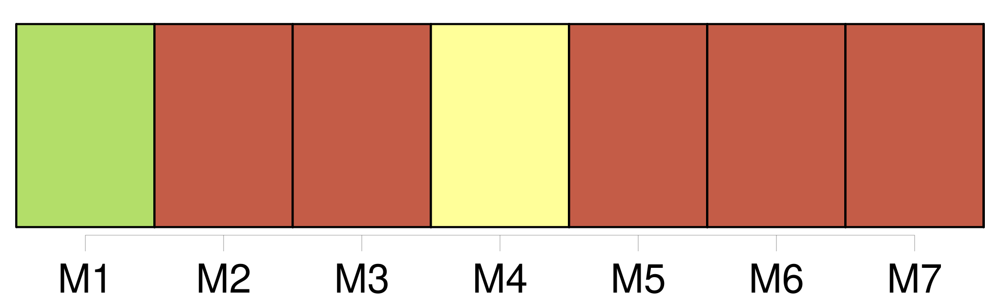
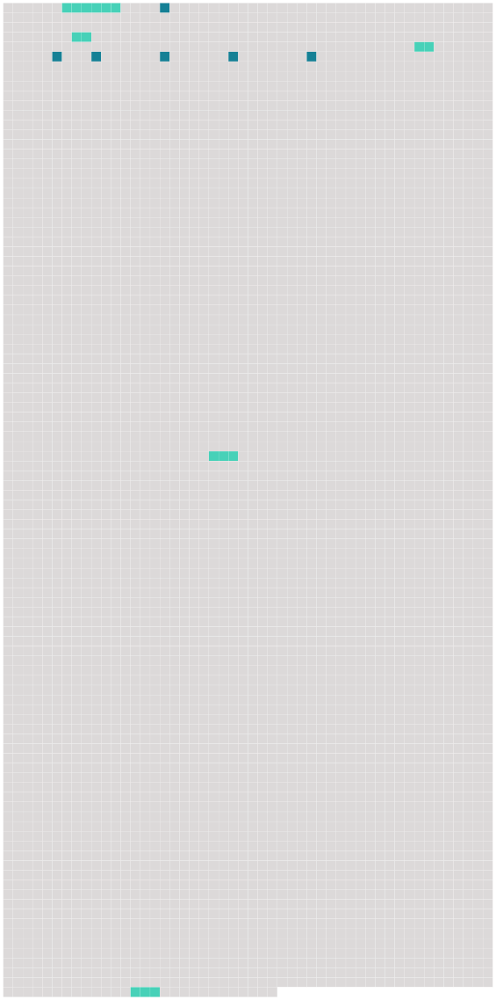

Longueur nb maillons : 11 mentions |
 |
À la porte piaffaient d’ impatience [deux chevaux noirs comme la nuit] , et soufflant sur [leur] poitrail deux longs flots de fumée. [5 phrases] Les aigrettes d’ étincelles que les fers de [nos chevaux] arrachaient aux cailloux laissaient sur notre passage comme une traînée de feu, et si quelqu’un, à cette heure de nuit, nous eût vus, mon conducteur et moi, il nous eût pris pour deux spectres à cheval sur le cauchemar. [1 phrases] La crinière [des chevaux] s’ échevelait de plus en plus, la sueur ruisselait sur [leurs] flancs, et [leur] haleine sortait bruyante et pressée de [leurs] narines. Mais, quand il [les] voyait faiblir, l’ écuyer, pour [les] ranimer, poussait un cri guttural qui n’ avait rien d’ humain, et la course recommençait avec furie. [66 phrases] Je ne pouvais croire que j’ avais rêvé, puisque Barbara avait vu comme moi l’ homme aux [deux chevaux noirs] et qu’ elle en décrivait l’ ajustement et la tournure avec exactitude. [112 phrases] À la porte, nous trouvâmes Margheritone : c’ était l’ écuyer qui m’ avait déjà conduit ; il tenait en bride trois chevaux noirs comme [les premiers,] un pour moi, un pour lui, un pour Clarimonde. |
 |
Il est possible de télécharger la ressource sur la page Ortolang |
Si vous avez des questions ou vous voyez des erreurs, merci d'envoyer un mail à silvia.federzoni89@gmail.com |